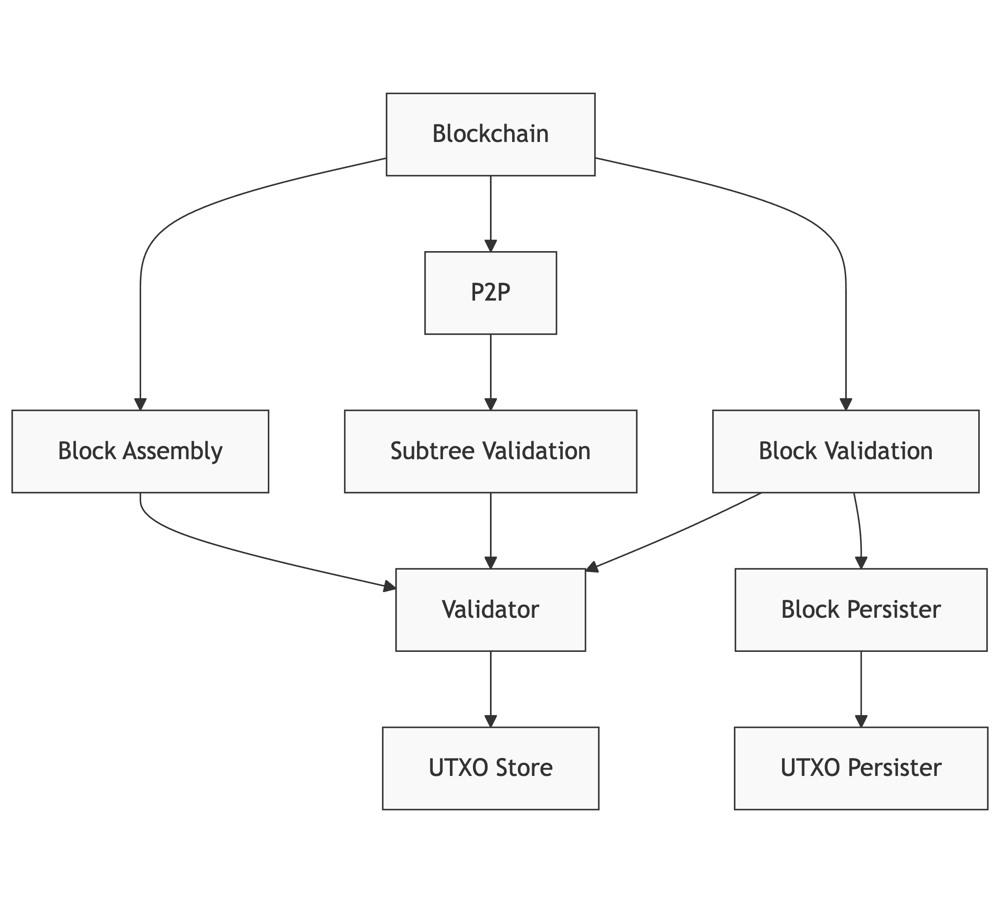

Daemon Reference
The daemon package provides core functionality for initializing and managing Teranode services. It handles service lifecycle management, configuration, and coordination between different components of the system.
Overview
The daemon is responsible for:
- Starting and stopping Teranode services
- Managing service dependencies and initialization order
- Handling configuration and settings
- Coordinating between different components
- Managing stores (UTXO, transaction, block, etc.)
- Health check endpoints
Besides being used for starting the Teranode services in our main application, the daemon package can also be used in tests to run Teranode instances with different configurations.
Core Components
Daemon Structure
type Daemon struct {
doneCh chan struct{}
}
The Daemon struct contains a doneCh channel for shutdown coordination.
Main Functions
New()
Creates a new Daemon instance:
func New() *Daemon {
return &Daemon{
doneCh: make(chan struct{}),
}
}
Start(logger, args, settings, readyCh)
Starts the daemon and initializes services based on configuration:
logger: Logger instance for outputargs: Command line arguments for service selectionsettings: Configuration settingsreadyCh: Optional channel to signal when initialization is complete
Stop()
Gracefully shuts down the daemon and all running services.
Service Management
Service Initialization
Services are initialized based on command-line flags or configuration settings. Each service can be enabled/disabled using:
- Command line:
-servicename=1or-servicename=0 - Global disable:
-all=0disables all services unless explicitly enabled
Available Services
- Alert
- Asset
- Blockchain
- BlockAssembly
- BlockPersister
- BlockValidation
- Legacy
- P2P
- Propagation
- RPC
- SubtreeValidation
- UTXOPersister
- Validator
Health Checks
The daemon provides HTTP endpoints for health monitoring:
/health/readiness: Readiness check/health/liveness: Liveness check- Port configurable via
HealthCheckPortsetting
Service Initialization Flow
Startup Sequence
When the daemon starts, it initializes services in a specific order based on dependencies. The sequence generally follows:
- Core infrastructure services (Blockchain, UTXO stores)
- Validation services (Validator, Block Validation)
- Communication services (Propagation, P2P)
- Assembly and persistence services
Service Dependencies and Deployment Models
Many services have dependencies on other services. For example, the Propagation service depends on the Validator service.
Service Dependency Overview

Note: This diagram shows logical dependencies. The actual implementation may use different communication methods (direct calls, gRPC, or Kafka) depending on configuration.
Validator Service Deployment
The Validator can be deployed in two distinct ways, controlled by the validator.useLocalValidator setting:
-
Local Validator (recommended for production):
// When validator.useLocalValidator=true mainValidatorClient, err = validator.New(ctx, logger, tSettings, utxoStore, txMetaKafkaProducerClient, rejectedTxKafkaProducerClient, ) -
Remote Validator Service:
// When validator.useLocalValidator=false mainValidatorClient, err = validator.NewClient(ctx, logger, tSettings)
The Propagation service and other services can use either deployment model:
validatorClient, err := GetValidatorClient(ctx, logger, tSettings)
if err != nil {
return err
}
// Initialize propagation with validator dependency
sm.AddService("PropagationServer", propagation.New(
logger.New("prop"),
tSettings,
txStore,
validatorClient,
blockchainClient,
validatorKafkaProducerClient,
));
Service Communication Patterns
Teranode services communicate using several methods:
- Direct method calls: When using local services (e.g., local validator)
- gRPC: For remote service communication with bi-directional streaming support
- Kafka: For asynchronous messaging and event-driven communication
Key Communication Flows:
- Tx Validator to Subtree Validation: Uses Kafka for transaction metadata
- P2P to Subtree Validation: Uses Kafka for notifications (not gRPC)
- Block Validation to Validator: For validating transactions in blocks
- Propagation to Validator: Uses either direct calls (local validator) or gRPC (remote validator)
Note: The SubtreeFound gRPC method was removed from the project. All references to this method were removed from documentation. The P2P service now only notifies the subtree validation service via Kafka, not through gRPC.
Singleton Patterns
Many services and stores use singleton patterns to ensure only one instance exists. Key examples include:
// Validator client singleton
if mainValidatorClient != nil {
return mainValidatorClient, nil
}
// UTXO store singleton
if utxoStoreInstance != nil {
return utxoStoreInstance, nil
}
This pattern ensures consistent state across all services using these components.
Store Management
The daemon manages several types of stores:
Transaction Store
func GetTxStore(logger ulogger.Logger) (blob.Store, error)
UTXO Store
func GetUtxoStore(ctx context.Context, logger ulogger.Logger, tSettings *settings.Settings) (utxostore.Store, error)
Block Store
func GetBlockStore(logger ulogger.Logger) (blob.Store, error)
Subtree Store
func GetSubtreeStore(logger ulogger.Logger, tSettings *settings.Settings) (blob.Store, error)
All stores follow a singleton pattern, ensuring only one instance exists per store type.
Configuration Options
The daemon uses a variety of configuration options to control service behavior and deployment models. Here are the key settings that affect daemon initialization and service configuration:
Service Deployment Settings
| Setting | Description | Default | Impact |
|---|---|---|---|
validator.useLocalValidator |
Controls whether the validator runs as a local component (true) or as a separate service (false) | true |
Significant performance impact; local validator is recommended for production |
grpc_resolver |
Determines the gRPC resolver to use for client connections | - | Supports Kubernetes ("k8s" or "kubernetes") and other resolvers |
healthCheckPort |
Port for health check endpoints | 8080 |
Exposed on /health/readiness and /health/liveness |
Store Configuration
| Setting | Description | Default | Impact |
|---|---|---|---|
utxoStore.UtxoStore |
URL to UTXO store | - | Can be file-based, SQLite, or other storage backends |
blockChain.StoreURL |
URL to blockchain store | - | Affects block storage location |
subtreeValidation.SubtreeStore |
URL to subtree store | - | Controls where subtrees are stored |
Communication Settings
| Setting | Description | Default | Impact |
|---|---|---|---|
kafka_validatortxsConfig |
Kafka configuration for validator transactions | - | Affects how transaction data is shared between services |
propagation_grpcListenAddress |
gRPC listen address for propagation service | - | Controls propagation service networking |
validator_kafkaWorkers |
Number of Kafka workers for validator service | 100 |
Affects throughput of Kafka message processing |
Consult the individual service documentation for service-specific configuration options. The settings listed here are particularly important for daemon initialization and service communication.
Testing Support
The daemon package is designed to support comprehensive testing scenarios:
- Can be initialized with different store implementations (SQLite, in-memory, etc.)
- Supports running complete Teranode instances in tests
- Allows step-by-step debugging of services
- Facilitates testing complex scenarios like double-spend detection
Example test initialization:
func NewDoubleSpendTester(t *testing.T) *DoubleSpendTester {
ctx, cancel := context.WithCancel(context.Background())
logger := ulogger.NewErrorTestLogger(t, cancel)
// Delete the sqlite db at the beginning of the test
_ = os.RemoveAll("data")
persistentStore, err := url.Parse("sqlite:///test")
require.NoError(t, err)
memoryStore, err := url.Parse("memory:///")
require.NoError(t, err)
if !isKafkaRunning() {
kafkaContainer, err := testkafka.RunTestContainer(ctx)
require.NoError(t, err)
t.Cleanup(func() {
_ = kafkaContainer.CleanUp()
})
gocore.Config().Set("KAFKA_PORT", strconv.Itoa(kafkaContainer.KafkaPort))
}
tSettings := settings.NewSettings() // This reads gocore.Config and applies sensible defaults
// Override with test settings...
tSettings.SubtreeValidation.SubtreeStore = memoryStore
tSettings.BlockChain.StoreURL = persistentStore
tSettings.UtxoStore.UtxoStore = persistentStore
tSettings.ChainCfgParams = &chaincfg.RegressionNetParams
tSettings.Asset.CentrifugeDisable = true
readyCh := make(chan struct{})
d := daemon.New()
go d.Start(logger, []string{
"-all=0",
"-blockchain=1",
"-subtreevalidation=1",
"-blockvalidation=1",
"-blockassembly=1",
"-asset=1",
"-propagation=1",
}, tSettings, readyCh)
<-readyCh
bcClient, err := blockchain.NewClient(ctx, logger, tSettings, "test")
require.NoError(t, err)
baClient, err := blockassembly.NewClient(ctx, logger, tSettings)
require.NoError(t, err)
propagationClient, err := propagation.NewClient(ctx, logger, tSettings)
require.NoError(t, err)
blockValidationClient, err := blockvalidation.NewClient(ctx, logger, tSettings, "test")
require.NoError(t, err)
w, err := wif.DecodeWIF(tSettings.BlockAssembly.MinerWalletPrivateKeys[0])
require.NoError(t, err)
privKey := w.PrivKey
subtreeStore, err := daemon.GetSubtreeStore(logger, tSettings)
require.NoError(t, err)
utxoStore, err := daemon.GetUtxoStore(ctx, logger, tSettings)
require.NoError(t, err)
return &DoubleSpendTester{
ctx: ctx,
logger: logger,
d: d,
blockchainClient: bcClient,
blockAssemblyClient: baClient,
propagationClient: propagationClient,
blockValidationClient: blockValidationClient,
privKey: privKey,
subtreeStore: subtreeStore,
utxoStore: utxoStore,
}
}
Additionally, using the following function:
tSettings := settings.NewSettings() // This reads gocore.Config and applies sensible defaults
Configuration
The daemon uses a combination of (in this priority order):
- Command line arguments
- Environment variables
- Configuration files
- Default settings